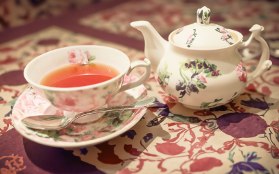
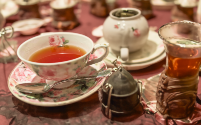
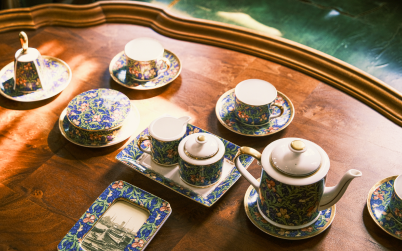

01 _ royal tea time

02 _ royal tea time

03 _ royal tea time
癒しのひととき
仕事に追われる忙しい日々。
たまの休日に、紅茶を飲んでほっと一息つきませんか？
「頑張る人たちを癒したい」
Royal Tea Timeはそんな思いから生まれました。
こだわった紅茶の味をお楽しみあれ。

04 _ royal tea time
美味しい紅茶の飲み方
step1 ポットとカップを温める
step2 紅茶をティーポットに入れる
step3 お湯を沸かしてポットに注ぐ
step4 茶葉を3分蒸らす
step5 茶こしでこす
紅茶を自分の手で入れて、
ゆったりとした時間を過ごしませんか？
05 _ royal tea time
使い道に合わせた紅茶
どなたでも気軽に紅茶をはじめていただけるよう、
茶葉の缶はもちろんティーバッグや
季節限定の詰め合わせフレーバーもご用意しております。
目的に合った商品をお選びください。
06 _ royal tea time
